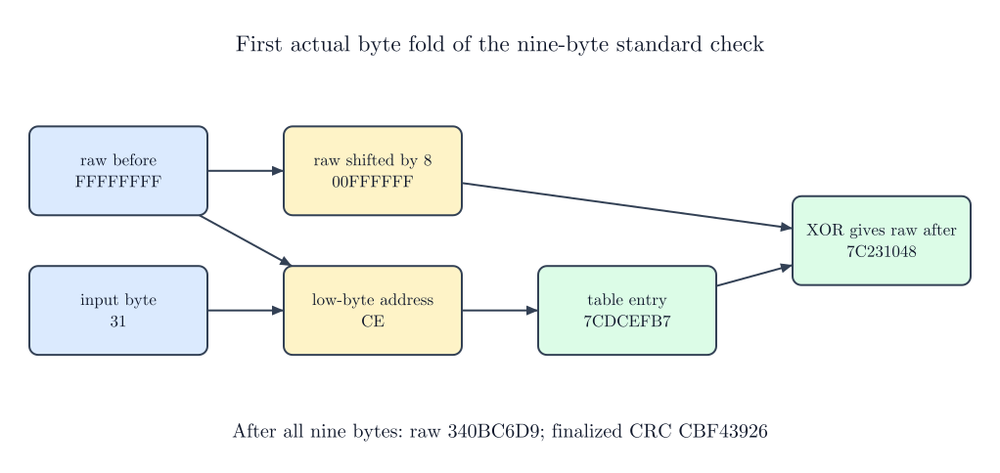
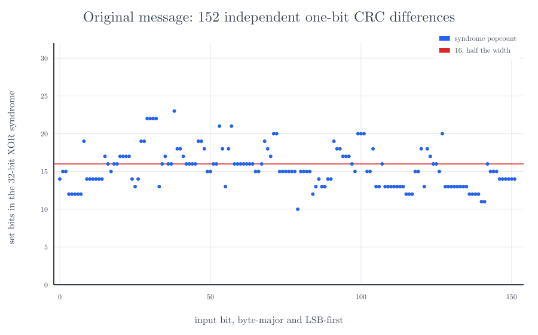
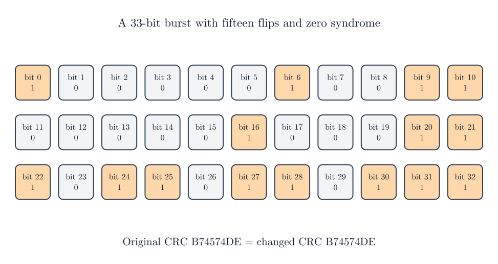

CRC-32: Actual Byte Folds, Error Syndromes and a Collision
Abstract
A CRC is a polynomial error detector whose guarantees depend on its exact generator, conditioning and bit order. We retain the standard 123456789 check and the original nineteen-byte message, but replace broad claims about odd-bit errors and avalanche with inspectable native evidence. The same production kernel exposes actual table addresses and raw registers; a bounded census checks every single-bit corruption and its output difference. Polynomial linearity explains why those differences ignore the message payload at fixed length. It also supplies a concrete collision: a 33-bit burst containing fifteen flips leaves this CRC unchanged. The distinction between guaranteed short-burst detection and general collision resistance is visible in the numbers rather than hidden behind an average changed-bit count.
Specify the CRC before interpreting a number
This report uses the reflected IEEE CRC-32 convention, also called CRC-32/ISO-HDLC: width 32, normal polynomial 0x04C11DB7 with its leading x³² term implicit, reflected polynomial 0xEDB88320, initial raw register 0xFFFFFFFF and final XOR 0xFFFFFFFF. Each byte is consumed least-significant bit first. Empty input has finalized CRC zero. Embedded zero bytes are data, not string terminators. This identifies the calculation; it is not a claim that every format uses the same byte serialization or covered fields.
The generator is
The raw register is an internal uncomplemented state. The public CRC is the raw register XOR 0xFFFFFFFF. Confusing the two changes every displayed value. The usual polynomial-division picture describes the linear remainder core; this public convention also includes initial and final conditioning.
One byte fold uses j=(raw XOR byte) AND 255, followed by raw_next=(raw>>8) XOR table[j]. The immutable table encodes eight reflected shift/conditional-XOR reductions. The following program prints all nine real byte updates and diagrams the first one, instead of reconstructing a second algorithm in the report.
#include <dm/dm.hpp>
int main() {
std::filesystem::create_directories("build");
const auto t=dm::algorithms::crc32_trace("123456789",9);
if(t.checksum!=0xCBF43926u || t.raw!=0x340BC6D9u || t.steps.size()!=9) return 1;
std::print("| byte index | unsigned byte | raw before | table address | actual table entry | raw after |\n| ---: | :--- | :--- | :--- | :--- | :--- |\n");
for(const auto& s:t.steps) std::print("| {} | {:02X} | {:08X} | {:02X} | {:08X} | {:08X} |\n",s.index,s.byte,s.raw_before,s.lookup_index,s.table_value,s.raw_after);
const auto& first=t.steps.front();
dm::graphics::Diagram d(65,1100);
dm::graphics::DiagramNodeStyle box;box.width=2.8;box.height=1.4;box.font_size=17;
box.fill={219,234,254};
d.node("raw",{0,0},std::format("raw before\n{:08X}",first.raw_before),box);
d.node("byte",{0,-2.2},std::format("input byte\n{:02X}",first.byte),box);
box.fill={254,243,199};
d.node("address",{4,-2.2},std::format("low-byte address\n{:02X}",first.lookup_index),box);
d.node("shift",{4,0},std::format("raw shifted by 8\n{:08X}",first.raw_before>>8),box);
box.fill={220,252,231};
d.node("table",{8,-2.2},std::format("table entry\n{:08X}",first.table_value),box);
d.node("after",{12,-1.1},std::format("XOR gives raw after\n{:08X}",first.raw_after),box);
d.edge("raw","shift").edge("raw","address").edge("byte","address")
.edge("address","table").edge("shift","after").edge("table","after")
.text({6,2},"First actual byte fold of the nine-byte standard check",23)
.text({6,-4.1},std::format("After all nine bytes: raw {:08X}; finalized CRC {:08X}",t.raw,t.checksum),20)
.save_svg("build/crc32_byte_fold.svg");
std::print("\nStandard check CBF43926; actual final raw register 340BC6D9.\n");
}| byte index | unsigned byte | raw before | table address | actual table entry | raw after |
|---|---|---|---|---|---|
| 0 | 31 | FFFFFFFF | CE | 7CDCEFB7 | 7C231048 |
| 1 | 32 | 7C231048 | 7A | B0D09822 | B0ACBB32 |
| 2 | 33 | B0ACBB32 | 01 | 77073096 | 77B79C2D |
| 3 | 34 | 77B79C2D | 19 | 646BA8C0 | 641C1F5C |
| 4 | 35 | 641C1F5C | 69 | 346ED9FC | 340AC5E3 |
| 5 | 36 | 340AC5E3 | D5 | F6B9265B | F68D2C9E |
| 6 | 37 | F68D2C9E | A9 | AF0A1B4C | AFFC9660 |
| 7 | 38 | AFFC9660 | 58 | 65B0D9C6 | 651F2550 |
| 8 | 39 | 651F2550 | 69 | 346ED9FC | 340BC6D9 |
Standard check CBF43926; actual final raw register 340BC6D9.

The table is generated at compile time. crc32() uses one table lookup per byte, O(n) time and O(1) state beyond that fixed table. crc32_trace() shares this executing fold and owns n event records, so it uses O(n) storage. It is the same production byte algorithm, not a separate illustrative bit loop.
Error syndromes are linear after equal-length conditioning cancels
For messages of a fixed length b bits, write the public CRC as C(M)=L_b(M) XOR c_b, where L_b is the linear polynomial remainder mapping and c_b is the conditioning constant. If error pattern E toggles bits, then
Thus the syndrome of one bit position depends on its position and total message length, not on which letters happen to be in the message. For two errors, their syndromes XOR. This is useful structure for error detection, and also means an average output-bit count cannot establish a cryptographic avalanche property.
Retain the original message The quick brown fox: nineteen bytes, or 152 bits. Bit b means byte b/8, mask 1<<(b%8). Every candidate corruption starts from the same original bytes; mutations do not accumulate across the census.
#include <dm/dm.hpp>
int main() {
std::filesystem::create_directories("build");
const std::string message="The quick brown fox";
const auto a=dm::algorithms::crc32_flip_scan(message,2907);
const auto zero=dm::algorithms::crc32_flip_scan(std::string(message.size(),'\0'),2907);
if(a.checksum!=0xB74574DEu || a.detected!=152 || a.flips.size()!=152) return 1;
std::vector<double> positions,changed;
std::set<std::uint32_t> syndromes;
for(std::size_t i=0;i<a.flips.size();++i) {
if(a.flips[i].syndrome!=zero.flips[i].syndrome) return 1;
positions.push_back(a.flips[i].bit);changed.push_back(a.flips[i].changed_bits);
syndromes.insert(a.flips[i].syndrome);
}
if(syndromes.size()!=152) return 1;
std::print("| original CRC | one-bit errors detected | mean output bits changed | minimum | maximum | unique one-bit syndromes |\n| :--- | :--- | ---: | ---: | ---: | ---: |\n");
std::print("| {:08X} | {} / {} | {:.6f} | {} | {} | {} |\n",a.checksum,a.detected,a.flips.size(),a.mean_changed_bits,a.minimum_changed_bits,a.maximum_changed_bits,syndromes.size());
std::print("\nAll 152 syndromes equal those for nineteen zero bytes. Distinct one-bit syndromes imply all 11476 two-bit errors in this fixture are detected.\n");
auto plot=dm::graphics::RPlot::create();
plot.points(positions,changed,"changed output bits",{37,99,235},3)
.abline_h(16,{220,38,38},1.5)
.legend({"syndrome popcount","16: half the width"},{{37,99,235},{220,38,38}})
.title("Original message: 152 independent one-bit CRC differences")
.x_label("input bit, byte-major and LSB-first").y_label("set bits in the 32-bit XOR syndrome")
.x_limits(-2,154).y_limits(0,32).size(900,560)
.save_svg("build/crc32_avalanche.svg");
}| original CRC | one-bit errors detected | mean output bits changed | minimum | maximum | unique one-bit syndromes |
|---|---|---|---|---|---|
| B74574DE | 152 / 152 | 15.460526 | 10 | 23 | 152 |
All 152 syndromes equal those for nineteen zero bytes. Distinct one-bit syndromes imply all 11476 two-bit errors in this fixture are detected.

Every single-bit error is detected here. The mean is 15.460526 of 32 bits, matching the old experiment, but that average is not an accidental-collision probability. Uniqueness of the 152 single-bit syndromes establishes detection of all 152×151/2=11,476 two-bit errors for this particular length and polynomial. A blanket all-length double-error guarantee needs a separation/order argument: a two-bit error is undetected exactly when G divides x^d+1, where d is the separation. This finite census does not prove an unbounded statement.
The short-burst guarantee, and its exact boundary
A burst's length is the span from its first changed bit through its last, including both endpoints; bits inside that span may be zero. A nonzero burst of length B is x^j Q(x), with degree(Q)=B−1 and nonzero endpoints. Because G has constant term one, it is coprime to x. For B≤32, Q has degree at most 31, so degree-32 G cannot divide it. Therefore such a burst has a nonzero syndrome. This is an algebraic guarantee for the specified CRC error model, independent of the original payload.
At length 33, Q can be G itself, whose remainder is zero. G has fifteen nonzero coefficients, so this undetected error has odd weight. Equivalently, G(1)=1 in GF(2), so G lacks the factor x+1 that would guarantee detection of all odd-weight errors. The former report's all-odd-error claim is false for this polynomial.
To map the normal polynomial into the reflected byte-major bit stream, use positions 32−e for each generator exponent e. The resulting 33-bit span has changed positions [0,6,9,10,16,20,21,22,24,25,27,28,30,31,32]. On five zero bytes it produces the binary byte pattern 41 06 71 DB 01 in hexadecimal. The next program applies exactly those native bit toggles to the original message, then checks the collision and diagrams the actual changed bits.
#include <dm/dm.hpp>
int main() {
std::filesystem::create_directories("build");
const std::string original="The quick brown fox";
const std::vector<std::size_t> bits{0,6,9,10,16,20,21,22,24,25,27,28,30,31,32};
const auto changed=dm::algorithms::crc32_flip_bits(original,bits);
const auto before=dm::algorithms::crc32(original),after=dm::algorithms::crc32(changed);
if(original==changed || before!=after || bits.size()!=15) return 1;
std::print("| changed bits | burst span | original CRC | changed CRC | XOR syndrome |\n| ---: | ---: | :--- | :--- | :--- |\n");
std::print("| {} | 33 | {:08X} | {:08X} | {:08X} |\n",bits.size(),before,after,before^after);
dm::graphics::Diagram d(65,1100);
dm::graphics::DiagramNodeStyle box;box.width=1.05;box.height=1.05;box.font_size=16;
for(std::size_t bit=0;bit<33;++bit) {
const auto difference=static_cast<unsigned char>(original[bit/8])^static_cast<unsigned char>(changed[bit/8]);
const bool toggle=(difference&(1u<<(bit%8)))!=0;
box.fill=toggle?dm::graphics::RGB{254,215,170}:dm::graphics::RGB{243,244,246};
d.node(std::format("bit{}",bit),{1.3*(bit%11),-1.5*(bit/11)},std::format("bit {}\n{}",bit,toggle?1:0),box);
}
d.text({6.5,1.8},"A 33-bit burst with fifteen flips and zero syndrome",23)
.text({6.5,-4.8},std::format("Original CRC {:08X} = changed CRC {:08X}",before,after),21)
.save_svg("build/crc32_generator_collision.svg");
bool trace_cap=false,work_cap=false,invalid=false;
try { (void)dm::algorithms::crc32_trace("abc",2); }
catch(const std::length_error&) { trace_cap=true; }
try { (void)dm::algorithms::crc32_flip_scan(original,2906); }
catch(const std::length_error&) { work_cap=true; }
try { (void)dm::algorithms::crc32_flip_bits("A",{0,8}); }
catch(const std::invalid_argument&) { invalid=true; }
if(!trace_cap || !work_cap || !invalid) return 1;
std::print("\nComplete trace cap, exact scan-work cap and invalid-bit validation: pass.\n");
}| changed bits | burst span | original CRC | changed CRC | XOR syndrome |
|---|---|---|---|---|
| 15 | 33 | B74574DE | B74574DE | 00000000 |
Complete trace cap, exact scan-work cap and invalid-bit validation: pass.

CRC therefore supports accidental-error detection with specific algebraic guarantees, rather than authentication of an adversarial message. It is not a substitute for a message authentication code. The collision above is a direct consequence of its public linear structure, not a random search.
Costs, ownership and reproducible controls
The actual byte trace defaults to a complete cap of 1,000,000 bytes/events. The corruption census recomputes n bytes for one baseline and each of 8n independent flips, so it performs exactly n(8n+1) byte folds: 2,907 for this nineteen-byte message. Its default budget is 100,000,000 folds, excluding scratch copies, bit toggles, population counts and output allocation. Runtime is O(n+8n²), with O(n+8n) owned storage. One scratch message is toggled and restored between trials; no report-side CRC or popcount implementation remains.
Complete trace/work and size-arithmetic checks occur before allocation or CRC evaluation, and results never silently truncate. A zero optional cap disables only that cap. Requested bit addresses validate in full before the input is copied; duplicate addresses cancel in pairs. All returned traces, changed bytes and census records own their storage. Empty input has checksum zero, no flips, false has_flips and zero summary placeholders. Allocation may still fail below a cap. The original crc32() signature and checksums.hpp include path remain available; independent calls share only immutable table constants.
No external dataset is useful here: the standard check, exact binary controls and original fixed message make the convention and failure modes reproducible. Native tests compare every one- and two-byte message with an independent bit-at-a-time reference, plus 1,000 random binary messages and the existing streaming codec CRC. They verify actual byte events, all original one-/two-bit errors, payload-independent syndrome composition, every burst through width twelve on an eight-byte frame and sampled bursts through width thirty-two. The fifteen-bit generator collision holds at every fitting offset of the original frame. Empty/binary data, complete budgets, invalid/duplicate bit addresses and owned storage are covered, including address/undefined sanitizers. These controls supplement the short-burst proof; they do not convert a finite sample into a universal low-weight-distance claim.
Primary reference
The [W3C PNG specification, Section 5.5 and Appendix D](https://www.w3.org/TR/png/) specifies the polynomial, reflected bit order, initial/final conditioning and sample table update. The report's burst proof and explicit generator collision explain the consequences of those parameters. PNG additionally specifies its covered chunk bytes and CRC serialization; this generic checksum API returns the integer and leaves format framing to its caller.